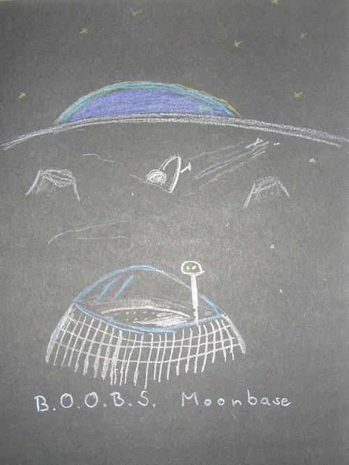
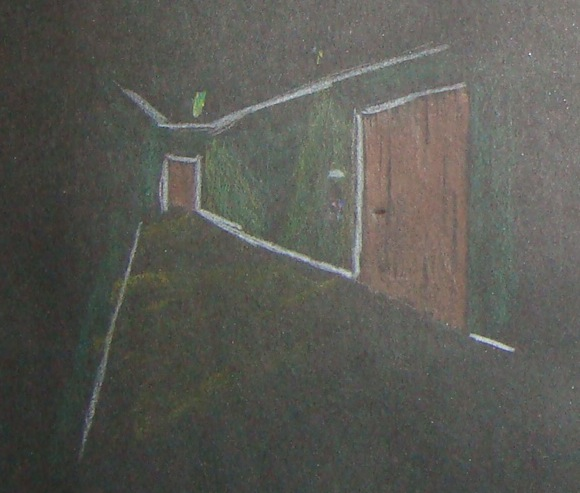

B.O.O.B.S. Saves the Day (r19)
story.missions = {}
story.seen = {}
stopSound(story.backgroundSound);
You thought those teleporters are sci-fi, well, not in this reality.
Start the game
Go on,
start the story.
Welcome to the alternative reality where a secret organization of hackers,
scientists, and utopists have invented a teleporter and decided to build a
operational base on the moon, waiting for their time to change the world.
Technical notes
The author's first language is German, if you happen to find
grammatical errors feel free to keep them.
The game is first a submission to
Ludum Dare
compo. The theme was 10 seconds and you'll
find it referenced within the story. The game will also be a submission to the
Boob Jam
and yes, it's a text adventure.
Overall, the scope of the story is roughly {{ out += countWords(); }} words, far less than
I had hoped for but it has only one loose end where the next mission would
start and I plan to write more of those.
One thing I had in mind was some sort of progress bar when you
find out bits about your past and regain your memory.
The source code can be found on
github.
Credits
Dedalus
the engine,
Howler
to manage the sounds.
Sounds came from
reacthor
,
loljames
and myself. Audacity has been used to modify the sounds.
Typos have been found by: gabi, iFire
Start the game
Go on,
start the story.
Hello Devi, this is the
B.O.O.B.S.
secret Moon base.
I'm Professor Angelica Miller, B.O.O.B.S.' chief scientic officer,
formerly a
NASA rocket science.
You are here because years ago you had this place created by
robots using the teleporter you invented. But tragically you
lost your memory on one of your trips home and it took us quite
some while to find you again. And your
sex-change
before you lost your memory
didn't make our search easier.
Don't worry, your memory will come back to you.
In the meanwhile take this teleporter bracelet and go to Commander Kaur in the mission control.
{{ story.putInInventory('teleporter-bracelet'); }}
Slightly impressed about the first rocket scienist you meet in your life, you ask
I was teleported here, so where's the space rockets?
Well, we don't have any. Looks like I took the wrong career path, but not all my
knowledge has become redundant, I'd like to think of myself as a hands-on
space scientist. That was before I started to hate this low gravity shit.
Oh how I miss the old rocket science, they always allowed me to do the count down:
10 seconds, 9, 8...
Her mind seems to drift off, you better change the topic quick.
{{ seen('sex-change'); }}
Wait, I had a sex-change?
you ask the professor.
Yes, and if you managed to forget that, it must have been an excellent procedure.
she continues,
It is amazing that in our reality you can have this done with weeks.
What boobs?
you ask the professor, with a tiny grin in the back of your mind.
B.O.O.B.S., not boobs, is the name of the secret uptopian organization you've created.
Honestly we don't know what B.O.O.B.S. actually stands for, you never told us.
And stop grinning about your own terrible jokes.
{{ playBackgroundSound('hall'); }}
{{? !hasSeen('hall') }}
{{ seen('hall'); }}
{{ playSound('teleporter'); }}
You've just been teleported from Earth into the moonbase's big Hall and a
woman dressed in a white coat
is ushering you off the teleporter platform.
{{??}}
You stand in the big Hall and you see
Professor Miller
working on some aparatus by the teleporters.
{{?}}
The Hall has a huge glass ceiling showing nothing but blackness and stars,
you can also see a slender tower, a lookout aparently and reachable by a
spiral staircase.
On the far end you see a sort of
control center
with a lot of workstation and monitors.
{{? hasSeen('canteen') }}
On the left there's the door to the
canteen.
{{?}}
{{ playBackgroundSound('static'); }}
You can see the Earth sneaking over the moon's horizon, all you see of Earth
is a part of the Pacific Ocean.

Climb the stairs down
to the Hall
The mission control is just a section of the big
Hall
give it a more overflowing look than it would have as normal room.
A large grid of displays depicts the earth with a few circles
around points of interest. In front of this stand a dozen work islands
with two to four computers each.
Between the workplaces
Cmd Kaur
is walking, occassionally talking with one of those at the computers and
other instruments.
Hello Devi. How are, still recovering from your memory loss?
{{? !story.isInInventory('teleporter-bracelet') }}
You should go see
Professor Miller
in the Hall and get a teleporter bracelet from her. Come back after you got the gun and
I might have a mission for you.
{{??}}
{{? !story.missions.manning }}
-
Kidnap Chelsea Manning
{{??}}
Aparently we've ran out of time and missions.
But please send the creator of this game
a few lines of encouragement
You finished the game!
{{?}}
{{?}}
Return to the Hall
Okay Devi, we'll go over to the stationary
teleporters.
Private Roldóttir will join us, I can't send you alone on your first mission.
In order for a safe teleport we need to land in a room that is most likely empty.
That's the reason why we won't teleport directly into Manning's cell but outside of it.
We'll have to crack the lock but Private Roldóttir is an expert for that.
Okay, let's teleport.
I think she mentioned laser guns.
I'm sorry dear,
Commander Kaur interrupts,
we don't have any guns at all.
hasSeen('sex-change')
She said I had a sex-change before my memory loss. I have the XY chromosoms we need for the lock!
Let's open this door!
!hasSeen('sex-change')
I think she said the force is strong with me, let's try
break that dooor.
!hasSeen('sex-change')
It's no hope, we need to get back to base and think about a way to break the door.
Teleport back to the moon.
{{ playSound('teleporter'); }}
Your second ever, well, as far as you can remember, teleport felt a lot easier
than the last one. Perhaps it's just using the teleporter pads instead of the
bracelet that makes the jumps feel more comfortable.
cont.

You are in a darkish, narrow corridor. You landed at what you consider the far end
of the corridor, right in front of a door. Cmd Kaur knocks on the door and from
inside the distinct but faint voice of Chelsa Manning asks who's there.
Yup, that's the right one. Hello Chelsea Manning, we're here to get you out.
cont.
Private Roldóttir is already having a look at the electronic lock.
Commander, there's a little problem, it's not the lock I expected.
They installed an additional electronic lock, specifically for male prisons,
the only lock on the planet that's doing super fast genetic tests.
Originally designed for Mormon households, adapted by a few states
to decrease bribery and prostitution in county prisons...
Oh I see, I'm boring you with details.
In short: We need someone with XY chromosoms to open this door.
The three of us, we are all women. What now?
The three of you slam against the door, hit the electronic locks but to now prevail.
In the process you damage your teleporter-bracelet and it gives a strong electric
hit to everyone. You lose.
{{ story.endGame(); }}
- Cmd Kaur
- We couldn't just break through the door?
- Private Roldóttir
- No it's to heavy
- Devi
- How about teleporting?
- Cmd Kaur
-
No, our bracelets have only enough energy for one teleport, we do have a spare one,
but that's for Chelsea.
- Devi
-
Oh wait a second, I remember
something Professor Miller said to me!
The air inside the cell is surprisingly fresh, Manning standin at the far end
of the small cell, looking confused about the three female "visitors".
- Manning
- Who are you? Why are you in here?
- Cmd Kaur
- We are here to rescue you, take this bracelet and put it around your wrist
She shows him her own bracelet to give him a bit more security about the whole
situation and her request. While he's it putting, Roldóttir grabs the hands of
Devi and the Commander, Devi remember this from today's first teleport, searching
Kaur's face for a nod and as Manning is finished they grab her hands and
Manning's question
And what's next?
fades in the empty cell as they
teleport to the moon.
{{ story.missions.manning = true; }}
{{ playSound('teleporter'); }}
{{ playBackgroundSound('hall'); }}
{{? story.missions.manning }}
The teleport completes and Chelsea Manning, still waiting for a reply to her
question, needs a few seconds to realize the change in light, air and location.
- Manning
- What the hell is going on?
- Cmd Kaur
-
Don't worry, you are save here. We are a secret organization which is trying
to change the world. And you're the first we rescued of the imprisoned hackers, journalists,
artists, well anyone who's in prison for speaking their mind or obeys orders
and follows their conscience.
Oh, and welcome to the Moon.
- Mannin
- The Moon?
- Professor Miller
-
Yes, the Moon. My name is Professor Miller, if you please would like to follow me,
I bet you want to get some nicer clothes and try the best cantine this side of the Moon.
The two leave the scene and
Cmd Kaur turns to the Private
{{??}}
You arrive at the Hall, the mission failed.
Cmd Kaur turns to the Private
{{?}}
- Cmd Kaur
-
What was going on down there? I thought our last intel regarding the lock
was only a few days old.
- Roldóttir
- I don't know Commander, but the genetic lock looked like it was installed only yesterday.
- Cmd Kaur
- Okay, we'll leave it at that. Dismissed Private.
-
Now Devi, your memory is still not fully recovered?
No,
you reply,
and I can't still imagine that I was involved in creating all this.
Not just involved, Devi, you started it!
Well, you must be hungry, the
canteen
is one of the
oldest facilities we have, maybe a visit there and a good meal will bring back some memories.
You find me in the mission control when you are ready for the next operation.
{{ seen('canteen'); }}
Indeed the canteen, just through where the Professor and Manning left, looked
older than the big Hall. I guess you have to make small steps when landing on the Moon.
On the left you see a self-service area. Tables of different size and comfy looking chairs take the
most of this rectangular hall. At the far side you see the only windows, some reaching
from the bottom to the top of the four meter high walls. Outside you think you can see a
a
crashed flying saucer.
Return to the big
Hall
or the
Mission Control
There's nothing special about this one, you remember history lessons in school
about the
Area 51 incident
how those poor aliens in their rather primitive
rescue pods crashed on earth. They didn't survive Earth's athmosphere for long
and President Eisenhower granted them a state funeral. Just in case their
relatives stopped by. But you can't remember any reports about a pod crashing
onto the Moon.